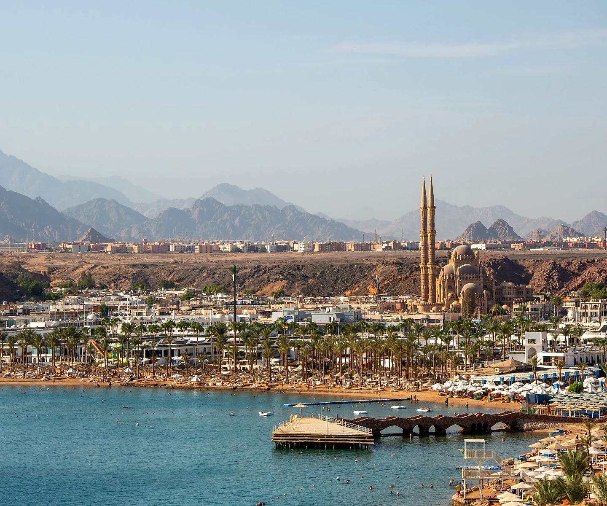

КУРОРТ
Шарм-эль-Шейх
Шарм-эль-Шейх расположен на юге Синайского полуострова, на побережье Красного моря, примерно в 15–20 минутах езды от международного аэропорта. Курорт известен коралловыми рифами, прозрачной водой и большим выбором современных отелей, многие из которых работают по системе Ultra All Inclusive.
Главная особенность Шарм-эль-Шейха — богатый подводный мир. Сюда едут ради дайвинга, снорклинга и отдыха у моря почти в любое время года. Чистая вода, живописные рифы и развитая гостиничная база сделали курорт популярным направлением на Красном море.